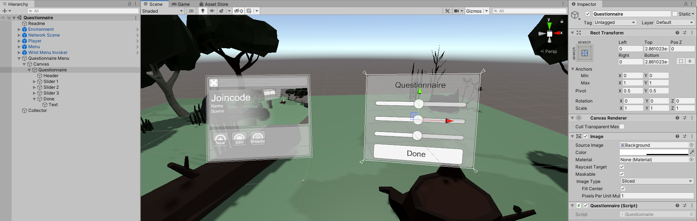
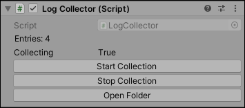

Questionnaire
The Questionnaire Sample (Samples/Single/Questionnaire) shows how the Event Logging System may be used to collect questionnaire responses.
This scene contains a panel with an example Component, Questionnaire attached to it. The Component iterates over all Slider instances under its GameObject, and uses a UserEventLogger to write their values when the user clicks Done.
public class Questionnaire : MonoBehaviour
{
EventLogger results;
// Start is called before the first frame update
void Start()
{
results = new UserEventLogger(this);
}
public void Done()
{
foreach (var item in GetComponentsInChildren<Slider>())
{
results.Log("Answer", item.name, item.value);
}
}
}

The scene contains a script LogCreatorCollector that creates a LogCollector if the Scene is running in the Editor, as an experimentor may do. The Questionnaire can be completed locally. Alternatively, the scene can be run remotely, and the experimentor in the Editor can click Start Collection on the LogCollector to recieve the Questionnaire results.
The experimentor can click Start Collection before or after the questionnaire has been completed, and the participant can complete the Questionnaire before or after joining the room. In all cases the results will be receieved correctly.
Sample Output
Below is the resulting User log file from an application built with the Questionnaire scene.
[
{"ticks":637599760103005990,"event":"Answer","arg1":"Slider 1","arg2":0.7987003},
{"ticks":637599760103292320,"event":"Answer","arg1":"Slider 2","arg2":0.28863412},
{"ticks":637599760103293850,"event":"Answer","arg1":"Slider 3","arg2":0.7020102}
]
The Questionnaire was filled in on an Oculus Quest, after joining the same room as a user running the same scene in the Unity Editor. As soon as the Questionnaire was completed, the Unity Editor user could find the User log by clicking the Open Folder button of the LogCollector Component in the Editor.

Since no filters were set up on the LogManager, an Application log for the session is also created in the same folder.
[
{"ticks":637599759770020997,"type":"Ubiq.Messaging.NetworkScene","event":"Awake","arg1":"a9ac9ce0-5386f227","arg2":"DESKTOP-F1J0MRR","arg3":"System Product Name (ASUS)","arg4":"f73fe01b1e21031d49274a1491d1d6b5714c92e9"},
{"ticks":637599760035593770,"type":"Ubiq.Voip.VoipPeerConnectionManager","sceneid":"a9ac9ce0-5386f227","objectid":"a9ac9ce0-5386f227","componentid":50,"event":"CreatePeerConnectionForRequest","arg1":"ed04a433-51c8dee5"},
{"ticks":637599759801422540,"type":"Ubiq.Messaging.NetworkScene","event":"Awake","arg1":"76dc754d-8faf26a5","arg2":"Oculus Quest","arg3":"Oculus Quest","arg4":"b8db4746286db62ecad4c6fa13f17ab6"},
{"ticks":637599760026272940,"type":"Ubiq.Voip.VoipPeerConnectionManager","sceneid":"76dc754d-8faf26a5","objectid":"76dc754d-8faf26a5","componentid":50,"event":"CreatePeerConnectionForPeer","arg1":"ed04a433-51c8dee5","arg2":"a9ac9ce0-5386f227"},
{"ticks":637599760026660240,"type":"Ubiq.Voip.VoipPeerConnectionManager","sceneid":"76dc754d-8faf26a5","objectid":"76dc754d-8faf26a5","componentid":50,"event":"RequestPeerConnection","arg1":"ed04a433-51c8dee5","arg2":"a9ac9ce0-5386f227"}
]